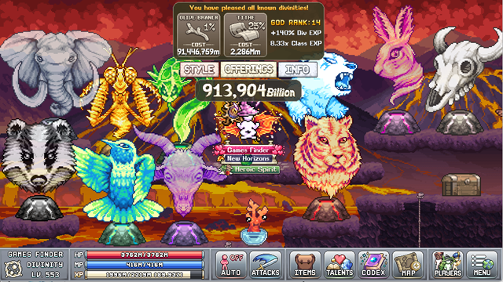
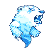
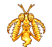
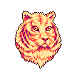
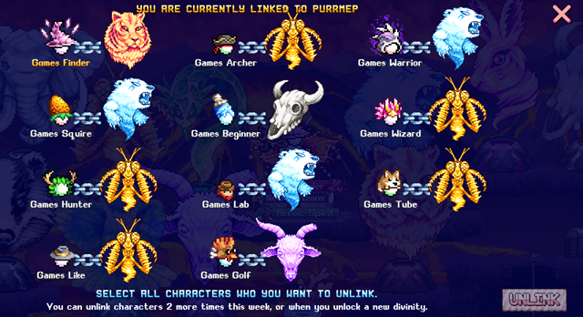
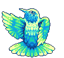
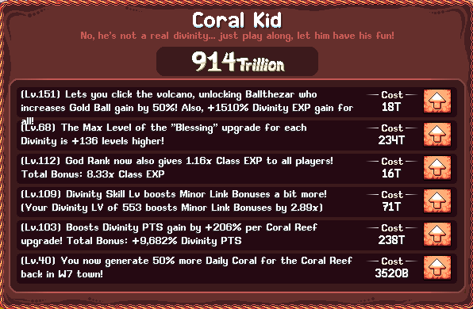

번역 안내. 클래스·스킬·탤런트 이름 등 고유명사는 인게임 검색을 위해 영어 그대로 두었고, 설명만 한글로 옮겼습니다.
Divinity 팁
방대한 위키 Divinity 정보와 함께 활용할 수 있는 일반적인 Divinity 진행 팁입니다.
- Arctis 우선: Arctis는 World 5 Lab에서 캐릭터들을 해방시켜 주므로 가장 먼저 도달해야 할 중요한 신입니다.
- 레벨 40 달성: Divinity 레벨 40은 TranQi 스타일을 해제하는 중요한 이정표로, 제단에 없어도 패시브 Divinity EXP를 얻을 수 있습니다.
- Blessing 보너스 놓치지 말기: 각 신은 제단에서 클릭하면 링크를 변경하고 추가 Divinity Point 획득 등 고유한 Blessing 레벨을 올릴 수 있습니다.
- 리링크 계획 세우기: 매주 두 번의 리링크(또는 새 Divinity 해제 시)로 제한되므로 초기화 전에 한 주를 신중하게 계획하세요. 이 두 번의 리링크는 언링크 UI에 진입해 캐릭터를 하나 이상 선택할 때마다 소모되므로, 여러 캐릭터의 링크를 해제하려면 동시에 진행해야 합니다.
- 신 랭크 파밍: 모든 Divinity를 해제한 후에도 추가 신 랭크를 통해 Div EXP, 데미지량, Blessing 보너스, 클래스 EXP가 계속 증가합니다.
- Doot 펫: 강력한 레거시 펫 Doot을 보유한 경우 캐릭터가 Divinity 레벨 2 이상이면 모든 신이 활성화됩니다. 다만 Purrmep과 Kattlekruk는 Minor Link 버프를 위해 여전히 캐릭터 한 명에 직접 링크해야 합니다.

초반 Divinity
World 5를 해제하고 스킬을 확립하는 초기 단계입니다. 이 단계의 목표는 Divinity 레벨 40에 도달해 TranQi 스타일을 해제하는 것으로, 제단에 없어도 시간이 지나면서 Divinity EXP가 누적됩니다. 도중에 Goharut (Goat) 신을 해제하면 제단에서 Laboratory로 이동해 AFK 상태에서 두 스킬을 동시에 진행할 수 있습니다.

레벨 40에 도달한 후 다음과 같이 신에 링크하세요:


| 신 | 비고 |
|---|---|
| Arctis | Lab에 있지 않아도 Wired In, Gilded Cyclical Tubing, No Bubble Left Behind, Killer's Brightside 등 핵심 Laboratory 버프를 해제하기 위해 필요한 캐릭터에 링크하세요. |
| Nobisect | 현재 세계 포탈 진행을 위해 캐릭터 한 명을 링크하세요. |
| Purrmep | 해제된 경우 캐릭터 한 명을 Purrmep에 링크해 Divinity EXP 2배, Boat Sailing Speed, Gaming Plant 성장 보너스를 받으세요. Elemental Sorcerer는 탤런트로 다른 Divinity에도 링크할 수 있어 이상적인 선택입니다. |
| Harriep | 나머지 캐릭터들을 Harriep에 링크해 프린팅 이득을 얻으세요. |
| Omniphau | 또는 Omniphau를 사용해 계정 우선순위에 따라 제련, 프린팅, 요리, 브리딩, 항해 또는 게이밍 진행을 얻으세요. |
| Snehebatu | World 5 Gem Shop에서 영구 Snehabatu 구매를 고려하되, 보석 예산과 다른 우선 Gem Shop 구매를 감안하세요. |
| Goharut | Divinity Altar를 사용할 때는 항상 Goharut으로 리링크해 동시에 추가 Lab 레벨을 얻으세요. |


중반 Divinity
대부분의 신을 해제하고 World 5 Caverns의 Pocket Divinity에 접근할 수 있는 단계입니다. 이를 통해 모든 캐릭터가 패시브로 두 신에 링크할 수 있어 상당한 유틸리티가 추가됩니다.
Pocket Divinity 레벨 2를 달성한 후 다음과 같이 신에 링크하세요:
| 신 | 비고 |
|---|---|
| Arctis | 항상 Lab 보너스에 접근하기 위해 Arctis를 Pocket Divinity에 링크하세요. |
| Harriep | 연금술, 스탬프 투자와 원자 생성을 위한 대규모 프린팅 이득을 위해 Harriep을 Pocket Divinity에 링크하세요. |
| Nobisect | 현재 세계 포탈 진행을 위해 최소 한 명의 캐릭터를 링크하세요. |
| Kattlekruk | 해제 후 캐릭터 한 명을 링크해 매일 연금술 버블 보너스와 동상 드롭 향상을 시작하세요. Purrmep과 마찬가지로 Elemental Sorcerer가 이상적이며, 탤런트를 통해 다른 신에도 링크할 수 있습니다. |
| Purrmep | 초반 Divinity와 동일한 이유로 캐릭터 한 명을 링크하세요. Elemental Sorcerer 또는 초보자 클래스가 이상적입니다. |
| Omniphau | 다른 모든 캐릭터에 Omniphau를 사용해 제련, 프린팅, 요리, 브리딩, 항해 또는 게이밍 진행을 얻으세요. |
| Snehebatu | World 5 Gem Shop에서 영구 Snehabatu 구매를 고려하되, 보석 예산과 다른 우선 Gem Shop 구매를 감안하세요. |
| Goharut | Divinity Altar를 사용할 때는 항상 Goharut으로 리링크해 추가 Lab 레벨을 동시에 얻으세요. |
| Flutterbis | World 1~3 스킬 레벨 50 미만인 캐릭터에게 순환 적용해 스킬 레벨을 더 빠르게 올리세요. 레벨 50 이상인 캐릭터에게도 사용해 더 높은 레벨로 올리고 약한 캐릭터를 위한 Divinity Pearl을 얻을 수 있습니다. |


후반 Divinity
모든 신과 World 7의 Research 및 Balloon Bay에 위치한 Coral Kid에서 제공하는 두 개의 추가 패시브 신 링크를 해제한 단계입니다. 이 패시브 링크들이 활성화되면 Doot 펫의 효율이 줄어들고 신 링크 과정이 크게 단순화됩니다.
이 패시브 신 링크들이 해제된 후 다음과 같이 신에 링크하세요:
| 신 | 비고 |
|---|---|
| Arctis | 항상 Lab 보너스에 접근하기 위해 Research Grid N4에서 Arctis를 링크하세요. |
| Omniphau | 영구적인 AFK 보너스를 위해 Coral Kid에 Omniphau를 링크하세요. |
| Harriep | 대규모 프린팅 이득을 위해 Harriep을 Pocket Divinity에 링크하세요. |
| Nobisect | World 7 진행과 Deathnote 파밍을 위해 Nobisect를 Pocket Divinity에 링크하세요. Snehebatu Gem Shop 구매가 없다면 포탈이나 Deathnote를 진행하지 않을 때 해당 신을 링크하는 것을 고려하세요. |
| Kattlekruk | 중반 Divinity와 동일한 이유로 캐릭터 한 명을 링크하세요. Elemental Sorcerer가 이상적입니다. |
| Purrmep | 초반 Divinity와 동일한 이유로 캐릭터 한 명을 링크하세요. Elemental Sorcerer 또는 초보자 클래스가 이상적입니다. |
| Snehebatu | World 5 Gem Shop 구매가 없다면 모든 캐릭터를 Snehabatu에 링크하세요. 다양한 AFK 배율 출처가 누적되어 AFK 이득의 힘이 상당히 강해져 있을 것입니다. |
| Goharut | Divinity Altar를 사용할 때는 항상 Goharut으로 리링크해 추가 Lab 레벨을 동시에 얻으세요. |
| Flutterbis | Snehabatu Gem Shop이 있다면 Divinity Pearl과 스킬 EXP를 위해 모든 캐릭터를 Flutterbis에 링크하세요. |